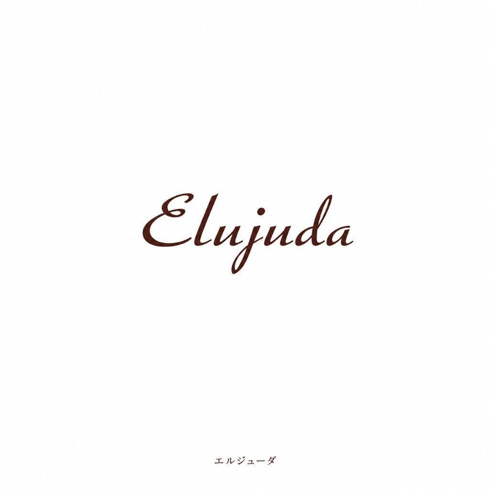

Buy Only ・ Walk-in Welcome
エルジューダ
表参道で"買うだけ"OK
施術もご予約もいりません
gallica / SEAMは エルジューダをメーカー公認の正規ルートで取り扱うヘアケアショップ
お買い物だけのご来店を歓迎しています

店舗のご案内
表参道での立ち寄り方
表参道・南青山は ファッションとビューティの発信地です 感度の高いショップが軒を連ね 新しいヘアケアをいち早く手に取れる街として知られています
ミルボンのアウトバストリートメント 髪の硬さ・柔らかさとなりたい質感からえらぶ設計で サロン専売のアウトバスとして定番のシリーズです
SEAMは表参道駅 A4出口から徒歩3分 青山通りやキャットストリートにも近い南青山エリアにあります
美容室帰りや買い物の途中に 気になっていた一本を実際に見て選べます 予約は不要で お買い物だけのご来店を歓迎しています
この店舗で出会える エルジューダ
取扱アイテムと ひとこと詳細

エルジューダ FO
120ml ・ 定価 ¥3,146 税込
細い髪のためのフルーエントオイル 軽さの中に熱ケアを忍ばせて ふわっと流れる毛先をつくる

エルジューダ MO
120ml ・ 定価 ¥3,146 税込
ごわつく太い髪が なじませるほどやわらかく メロウオイルの名の通り 髪の頑固さがほどけていく

エルジューダ エマルジョン
120g ・ 定価 ¥3,146 税込
セラミド2が細い髪の水分を閉じ込めるミルク やわらかさが続く毛先は 触るたび少しうれしい
価格・仕様は変わる場合があります このほかのエルジューダも店頭に揃っています
買い方は 2とおり
In Store
gallica / SEAMの店頭で選ぶ →
どなたでも購入OK ・ 予約不要 ・ エルジューダを実際に手に取れます
Members Only
会員制オンラインショップ →
サロン専売品を会員価格で ・ ご登録は店頭のみ
販売のみ・ネットショップでのご購入について
エルジューダは美容室専売品（サロン専売品）です SEAMは正規取扱店として販売のみのご来店を歓迎しています 施術も予約も要りません
店頭でご登録いただくと 買い足しは会員制のネットショップから通販でご注文いただけます
よくある質問
- 表参道でエルジューダを買うだけの来店はできますか
- はい gallica / SEAMでは施術やご予約がなくても エルジューダをお買い求めいただけます お買い物だけのご来店を歓迎しています 販売店をお探しでしたら そのままお越しください
- 表参道店へのアクセスは
- 表参道駅 A4出口から徒歩3分（南青山エリア）です
- 予約は必要ですか
- 不要です 表参道駅 A4出口から徒歩3分（南青山エリア） 営業時間内にそのままお越しください
- 会員でなくても買えますか
- 店頭はどなたでもご購入いただけます 会員制はオンラインショップのみで ご登録は店頭でご案内しています
- エルジューダの在庫はありますか
- 在庫は時期により変わります 確実にお求めの場合は gallica / SEAMのInstagramや店頭でご確認ください